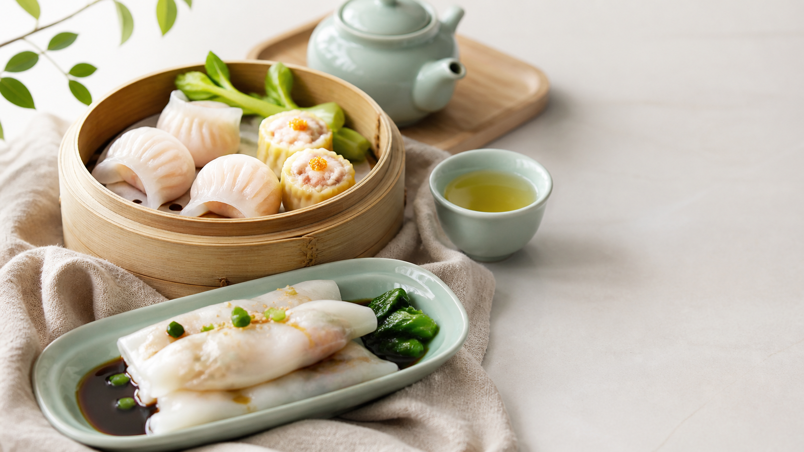

上传、识别、修正、计算、记录，五步完成餐食档案，并优先适配粤菜与广州本地食材。

用手机拍摄或从相册选择当前这一餐的照片。系统建议：
基于广州本地餐食数据库，AI识别菜品、食材与份量，并给出置信度。
识别结果可以修正。用户可调整菜品、食材和份量，让记录更接近实际摄入。
当前为原型示例。请在第三步确认菜品与重量后生成新的估算。
原型示例依据食物数据与份量换算，展示本餐五项关键营养指标。
想让小穗帮你解读这一餐？点下方按钮把营养分析发送给智能助手。
保存本餐，自动同步至今日膳食档案。你可以在时间轴查看每一餐、每一天的完整轨迹。
记录完成后，让AI助手给你解读本餐、评价今日、推荐下一餐
进入智能助手 →原型演示 · 当前识别结果与营养数据为示例估算，不构成医疗或诊断建议。